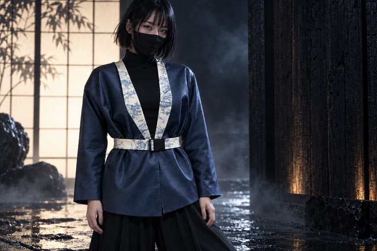

AJ · Vestes en pièces uniques
Une veste.
Une seule.
Chaque veste est cousue par Julia, dans des tissus achetés en France. Pas d’usine, pas de série : un seul exemplaire de chaque.
Scène de test 1 / 3
Les pièces
Pièces

01 · Veste bleue ceinturée · curseur « Voir »Scène de test 2 / 3
Contact
Nous écrire.
Pour une pièce, une retouche, ou simplement une question.
Notre adresse de contact sera publiée ici prochainement.
Scène de test 3 / 3 · © 2026 AJ